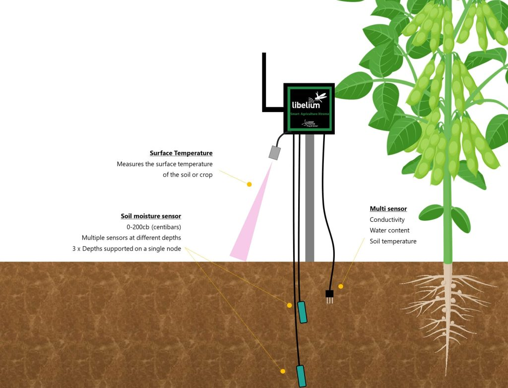
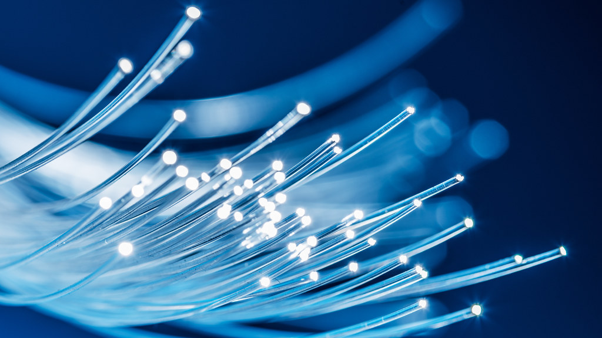
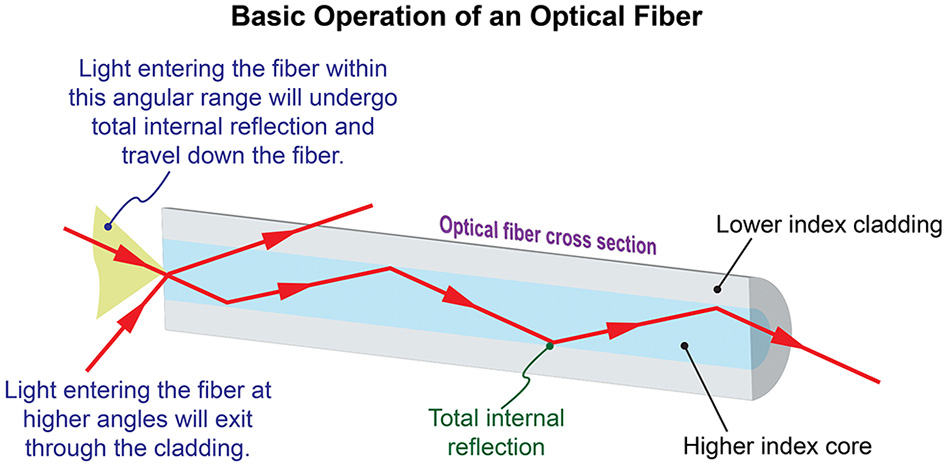

During our visit to the Electronics and Computer Science Department,
we were introduced to several ongoing research projects and emerging technologies. According to the assigned task, we selected two of the directions – the Smart Soil Monitoring Chipset and Optical Fibres – for a deeper understanding. This learning log will record the basic working principles of these technologies and explore their potential applications in the fields of pervasive media and interactive art.

Manx Technology Group. (2021). Soil Monitoring with IoT – Smart Agriculture. Available at: https://manxtechgroup.com/soil-monitoring-with-iot-smart-agriculture/ (Accessed: 6 March 2025)
Smart Soil Monitoring Chipset
Introduction:
The Smart Soil Monitoring Chipset is an intelligent soil monitoring chip designed to detect in real time the nutritional parameters and environmental conditions required for plant growth. These include macroelements and trace elements in the soil, as well as the pH value, humidity, and salinity.
Working Principle (Basic Level):
- This chip tracks the changes in nutrient components in the soil based on multiple sensing technologies, including electrochemical sensors and optical sensors.
- The chip needs to have a certain processing capacity and is connected to a data platform via Wi-Fi, Bluetooth, or LoRa communication modules to enable real-time analysis and monitoring.
- For field applications, it also requires an energy-efficient design and good durability.
Potential Applications (General Media/Interactive Art):
- Smart Plant Devices: Embed the chip into interactive art installations, and the health status of plants can be dynamically fed back to the audience through lights or sounds.
- Immersive Exhibitions: Dynamically adjust the visual and auditory effects in the exhibition environment according to the real-time data changes collected from the soil of plants, creating a space that represents the “mood of plants”.
- Educational Interactive Systems: In museums or science centers, enhance the public’s understanding of the relationship between plants and the environment by visually presenting the real-time changes in soil nutrients.

University of Bath. (n.d.). Optical Fibres. Available at: https://www.bath.ac.uk/research-groups/optical-fibres/ (Accessed: 6 March 2025)
Optical Fibres
Introduction:
Optical fibres are a technology that transmits optical signals based on the principle of total internal reflection, enabling high-speed and low-loss data transmission. Besides the communication field, optical fibres are also widely used in sensors and optical displays.
Working Principle (Basic Level):
- Light rays are reflected and propagate inside the optical fibre with almost no energy loss, thus achieving long-distance and high-efficiency information transmission.

Coherent. (n.d.). Optical Fibers. Available at: https://www.coherent.com/news/glossary/optical-fibers (Accessed: 6 March 2025)
- Optical fibres can not only transmit light but also serve as sensors to detect changes in the external environment, such as temperature, pressure, or light intensity.
Potential Applications (General Media/Interactive Art):
- Visual Enhancement: Lead out the LED lights through optical fibres to bring a softer and more natural light effect to mechanical flowers or other art installations.
- Tactile Sensing Interaction: Use optical fibre sensors to detect the touch actions of the audience, enabling the mechanical flowers to respond in real time to touches and improving interactivity.
- Simulating Plant Signal Communication: Utilize optical fibres to transmit optical signals of different colors or intensities to simulate the signal communication between plants and achieve a more realistic biological simulation experience.
Summary and Reflection
This visit provided me with an depth understanding of how various advanced technologies can play a role in future interactive art and pervasive media projects.
The Smart Soil Monitoring Chipset inspired me with new ideas regarding environmental perception and dynamic feedback. It made me realize the importance of real-time data collection from the environment and how it can be translated into interactive elements. On the other hand, Optical Fibres showed me the vast potential of light as a medium in enhancing interactive experiences. The ability of optical fibres to not only transmit light but also act as sensors opened up new possibilities for creating more engaging and immersive artworks.
In future projects, I aspire to apply these technologies in my own creations. For example, I plan to combine optical fibre sensing and real-time soil monitoring in plant interactive installations. By doing so, I hope to create works that are more vibrant and environmentally conscious, bridging the gap between technology, art, and nature. This will not only add a new dimension to my art but also raise awareness about the importance of environmental protection through interactive experiences.